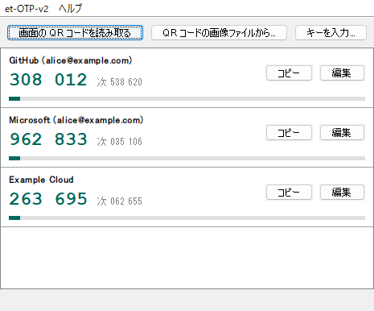

デスクトップで使える TOTP ソフトトークン
et-otp-v2 は2段階認証に使う時間ベースのワンタイムパスワード（RFC 6238）を生成します。Java Swing で作った小さなプログラムで、画面に表示した QR コードを読み取ってサービスを登録できます。
ダウンロード ソースコード
機能
- 2 段階認証のコード（TOTP、RFC 6238）を生成し、次のコードと残り時間もあわせて表示します。SHA-1、SHA-256、SHA-512、6〜8 桁、任意の更新間隔に対応しています。
- 複数のサービスを登録できます。コードをクリックするか「コピー」を押すと、クリップボードにコピーできます。
- 画面に表示した QR コードを読み取ってサービスを登録できます。Windows では、ほかのウィンドウの裏にあるウィンドウからも読み取れます。QR コードの画像ファイルや、キーの入力でも登録できます。
- 登録したサービスは暗号化して保存します。Windows では、Windows のユーザーで保護する方法（パスワード不要）と、パスワードで保護する方法を選べます。macOS と Linux では、パスワードで保護します。
- 画面は日本語と英語に対応しています。
- パスワードで保護している場合は、操作しなかったときや PC をロックしたときに、自動でロックします。
- サービスを名前で絞り込み、キーボードだけでコードをコピーできます。並び順も変えられます。
- バッチファイルなどから、ウィンドウを開かずにコードを取得できます。
インストールと起動
Releases ページから、使っている OS に合うポータブル版をダウンロードします。ポータブル版には Amazon Corretto 25（LTS）から作った Java の実行環境を同梱しているので、インストールや管理者の権限は要りません。
| OS | ファイル | 起動の方法 |
|---|---|---|
| Windows | et-otp-v2-<バージョン>-windows-x64-portable.zip | 展開して et-otp-v2.bat をダブルクリックします。 |
| macOS（Apple シリコン） | et-otp-v2-<バージョン>-macos-arm64-portable.tar.gz | 展開して et-otp-v2.command をダブルクリックします。起動できない場合は、ターミナルで sh et-otp-v2.command を実行してください。 |
| Linux | et-otp-v2-<バージョン>-linux-x64-portable.tar.gz | 展開して、ターミナルで sh et-otp-v2.sh を実行します。 |
同梱している Java の実行ファイルは、Amazon の署名が付いた Corretto のものをそのまま使っています。会社や組織のパソコンで使う場合は、ソフトウェアの利用について社内のルールを確かめてから使ってください。
Java 25 以降が入っている環境では、JAR だけを使うこともできます。
java -jar et-otp-v2-<バージョン>.jar自分でビルドする場合は mvn verify を実行し、target フォルダの JAR を使います。
サービスの登録
- et-otp-v2 を起動します。初めて起動したときは初期設定のウィザードが開くので、保護方法を選びます。パスワードで保護する場合は、パスワードも決めます。設定ファイルの保存先は 変更... で変えられます。すでにある設定ファイルを選んで、そのまま使うこともできます。Windows では、デスクトップにショートカットも作れます。
- ブラウザで、サービスの 2 段階認証の設定画面を開き、QR コードを表示します。
- et-otp-v2 の 画面の QR コードを読み取る を押します。画面とウィンドウが一覧で表示され、QR コードが見つかったものが選ばれた状態になります。選ばれているものを確かめて 読み取る を押し、サービスの名前を確かめて OK を押すと、登録できます。画像は一覧の表示と QR コードを探すためだけに使い、保存しません。
- et-otp-v2 に表示されたコードを、サービスの設定画面に入力します。この手順を行わないと、サービス側の設定は完了しません。
QR コードが見つからない場合は、QR コードが小さすぎないかを確かめてください（Ctrl キーと「+」キーでページを拡大できます）。QR コードの画像ファイルがある場合は QR コードの画像ファイルから...、キー（英字と数字の文字列）が分かる場合は キーを入力... でも登録できます。
サービスが多い場合は、検索欄に名前の一部を入力すると、名前にその文字を含むサービスだけを表示します。大文字と小文字、全角と半角の違いは区別しません。ウィンドウのボタンにフォーカスがあるときは、英数字を入力するとそのまま検索を始めます。日本語で探す場合は、Ctrl+F（macOS では ⌘F）で検索欄に移動してから入力してください。表示したサービスが 1 件のときは Enter でコードをコピーします。複数のときは、上下キーで選んでから Enter を押します。Esc を押すと、すべてのサービスの表示に戻ります。
並び順は、サービスの 編集 を押すか行を右クリックして、上へ、下へ、先頭へ で変えられます。並び順は設定ファイルに保存し、コマンドラインの --list も同じ順に出力します。検索欄で絞り込んでいる間は、並び順を変えられません。
登録したサービスは、ホームフォルダの .et-otp.properties に保存されます。別のフォルダやファイル名に移す場合は、et-OTP-v2 → 設定 を開き、全般 タブの 移動... を押します。移動先はホームフォルダの .et-otp-location.properties に記録し、次に起動したときもその保存先を使います。et-otp-v2 で作ったデスクトップのショートカットも、移動先に合わせて更新します。保存先を変えていない場合、起動したときの作業フォルダに .et-otp.properties があれば、そちらを使います（et-otp 1.x と同じ動きです）。ファイルの場所は ヘルプ → バージョン情報 で確認できます。言語とウィンドウの位置は、同じフォルダの .et-otp-ui.properties に保存されます。
パスワードで保護している場合は、席を離れたときにコードを見られないように、自動でロックします。ロックすると、ウィンドウからコードを消し、もう一度パスワードを聞きます。自分でコピーしたコードがクリップボードに残っていれば、それも消します。開いていたダイアログ（キーの入力や設定画面など）は閉じ、確定していなかった変更は保存しません。初期設定では、5 分間操作しなかったとき、PC をロックしたとき、スリープしたときにロックします。条件は et-OTP-v2 → 設定 の ロック タブで変えられ、ウィンドウを最小化したときにロックすることもできます。すぐにロックするには、et-OTP-v2 → ロック（Ctrl+L、macOS では ⌘L）を選びます。PC のロックを検知するのは Windows だけです。macOS と Linux では、操作しなかったときとスリープしたときにロックします。Windows のユーザーで保護している場合は、パスワードなしで開けるため、ロックしません。
ロックすると、パスワードから作った鍵はメモリー上で上書きして消します。登録したサービスのキーは、Java の仕組み上すぐには上書きできないため、使わなくなったメモリーとして後で解放されます。
保護方法は、et-OTP-v2 → 設定 の 保護 タブで変えられます。Windows のユーザーで保護した場合、ほかの PC やほかの Windows ユーザーでは読めません。PC を替えたときはサービスを登録し直す必要があるので、サービスが発行するバックアップコード（リカバリーコード）を PC とは別の場所に保管してください。
画面の言語は OS の設定に合わせます。OS の言語が日本語なら日本語、それ以外なら英語で表示します。切り替える場合は、et-OTP-v2 → 設定 を開き、全般 タブで言語を選びます。
コマンドラインでコードを取得する
--code <サービス名> を付けて起動すると、ウィンドウを開かずに、そのサービスの現在のコードを出力します。バッチファイルなどで、2 段階認証のコードを入力する処理に組み込めます。Windows のポータブル版では、次のように使います。
for /f "delims=" %%c in ('call "C:\tools\et-otp-v2\et-otp-v2.bat" --code AWS') do set MFA_CODE=%%c
if not defined MFA_CODE exit /b 1- サービス名には、et-otp-v2 に表示している名前を指定します。同じ名前がない場合は、大文字と小文字の違いを無視して探します。
--listを付けると、登録しているサービスの名前を出力します。 - パスワードで保護している場合は、パスワードを聞かれます（
--password-stdinを除く）。入力したパスワードは画面に表示しません。Windows のユーザーで保護している場合は、何も聞かずにコードを出力します。 - コードが 3 秒以内に変わる場合は、次のコードに変わるまで待ってから出力します。
- 標準出力にはコード（
--jsonでは JSON）だけを出力します。パスワードの問い合わせとエラーは、標準エラー出力に出します。終了コードは、成功が 0、失敗が 1、オプションの誤りが 2 です。 - 設定ファイルは読むだけで書き換えないので、ウィンドウを開いたままでも使えます。ただし、et-otp 1.x と et-otp-v2 2.0 の形式のファイルは読めないため、先にウィンドウで一度開いて新しい形式に変換してください。
- macOS のポータブル版では
sh et-otp-v2.command --code AWS、Linux のポータブル版ではsh et-otp-v2.sh --code AWS、JAR だけを使う場合はjava -jar et-otp-v2-<バージョン>.jar --code AWSのように実行します。
次のオプションも使えます。--help で一覧を表示します。
--copy：コードを出力せずに、クリップボードにコピーします。コピーしたコードは、自動では消しません。Linux では、クリップボードを管理するアプリがない場合、et-otp-v2 が終わるとコピーした内容も消えます。--next：次の期間のコードを出力します。この場合は、コードが変わるまで待ちません。--json：結果を JSON で出力します。--codeでは、サービス名（name）、コード（code）、残り秒数（secondsLeft）、期間（period）、次のコード（next）を出力します。ASCII 以外の文字は\uXXXXの形で出力するため、コンソールの文字コードに左右されません。--password-stdin：パスワードを標準入力の 1 行目から読みます。タスク スケジューラやほかのプログラムからの呼び出しなど、コンソールのない環境でも使えます。パスワードが違う場合は、聞き直さずに失敗します。--config <ファイル>：指定した設定ファイルを使います。--version：バージョンを出力します。
--password-stdin には、例えば、ほかのユーザーが読めない場所に置いたファイルから、次のようにパスワードを渡します。
"C:\tools\et-otp-v2\et-otp-v2.bat" --code AWS --password-stdin < "%USERPROFILE%\secret\et-otp-password.txt"パスワードを環境変数やコマンドラインの引数で渡す方法は、用意していません。コマンドラインの引数はほかのプログラムから見え、環境変数も同じユーザーのほかのプログラムから読めて、起動したプログラムにも引き継がれるためです。echo パスワード | ... で渡すこともできますが、cmd はパイプの左側を別の cmd として起動するため、パスワードがその cmd のコマンドラインとしてほかのプログラムから見えます。バッチファイルやコマンドの履歴にも残ります。また、cmd の echo パスワード | ... は「|」の前の空白もパスワードとして渡すため、使う場合は echo パスワード| ... のように空白を入れずに書きます。
et-otp 1.x と et-otp-v2 2.0 からの移行
et-otp-v2 は、元の et-otp と et-otp-v2 2.0 の設定ファイルを読めるので、今の .et-otp.properties をそのまま使えます。同じフォルダで et-otp-v2 を起動し、今のパスワードでロックを解除してください。
最初にロックを解除できたとき、et-otp-v2 は古いファイルを .et-otp.properties.v1.bak（et-otp 1.x の場合）または .et-otp.properties.v2.bak（et-otp-v2 2.0 の場合）にコピーします。そのあと .et-otp.properties を、複数のサービスを登録できる新しい形式で書き直します。
et-otp 1.x から移行したあとは、コードが使えるかを一度確かめてください。古い形式ではパスワードの間違いを必ず見つけられるとは限りません。サービスがコードを受け付けない場合は、バックアップのファイルを元に戻し、正しいパスワードでロックを解除し直してください。
et-otp 1.x と et-otp-v2 2.0 は新しい形式を読めません。元のバージョンに戻す場合は、バックアップのファイルを使ってください。新しいコードが使えることを確かめたら、バックアップは削除してください。
| et-otp 1.x | et-otp-v2 | |
|---|---|---|
| 鍵の導出 | PBKDF2-HMAC-SHA1、1,000回、128ビットの鍵 | PBKDF2-HMAC-SHA256、600,000回、256ビットの鍵（パスワードで保護する場合） |
| 暗号化 | AES の ECB モード、PKCS#5 パディング | AES-256-GCM、ランダムな96ビットの IV（パスワードで保護する場合）、または Windows の DPAPI |
| パスワードの間違いと改ざん | 見つけられない場合がある | 必ず見つける |
ライセンスとクレジット
et-otp-v2 は GNU General Public License v2.0 only で公開しているフリーソフトウェアです。
Bernd Eckenfels 氏の et-otp を引き継いで開発しています。Daniel Beer 氏の QR コード解析ライブラリ quirc（ISC ライセンス）を Java に移植したコードを含みます。